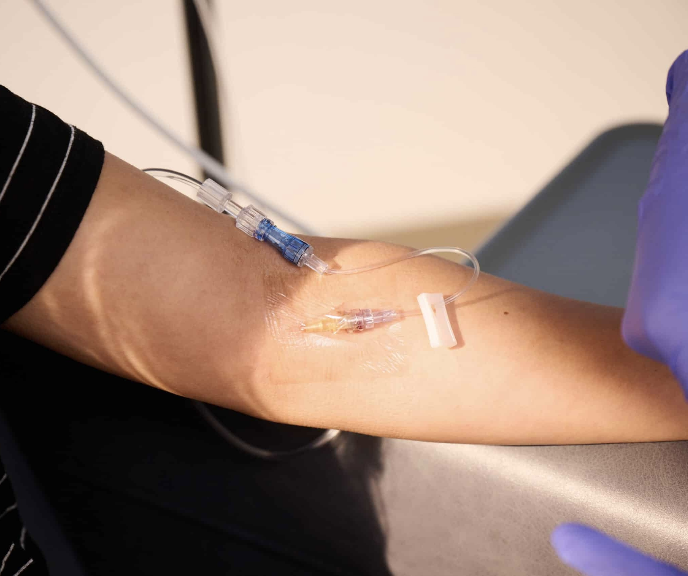

LEAKAGE
HOW DO WE KNOW?
Primary Symptoms
As IV fluid begins to infiltrate into the surrounding tissue, liquid will begin to leak out of the
IV site itself.
We designed a cellulose-based detection pad to replace current Tegaderm™ films. Upon absorbing these leaked fluids, its bright color change illustrates to patients, family members, and care providers that failure has occurred.
We designed a cellulose-based detection pad to replace current Tegaderm™ films. Upon absorbing these leaked fluids, its bright color change illustrates to patients, family members, and care providers that failure has occurred.

NEXT STEPS
Our Solution

Our swelling patch is made up of four layers:
- A bright-blue dye layer that appears only when leakage occurs.
- A cellulose detector that is only sensitive to IV fluids.
- An adhesive coating that adheres around the IV site.
Thanks for visiting! This website is currently under construction.
Contact us at info@iv-safe.com with any questions.
Contact us at info@iv-safe.com with any questions.